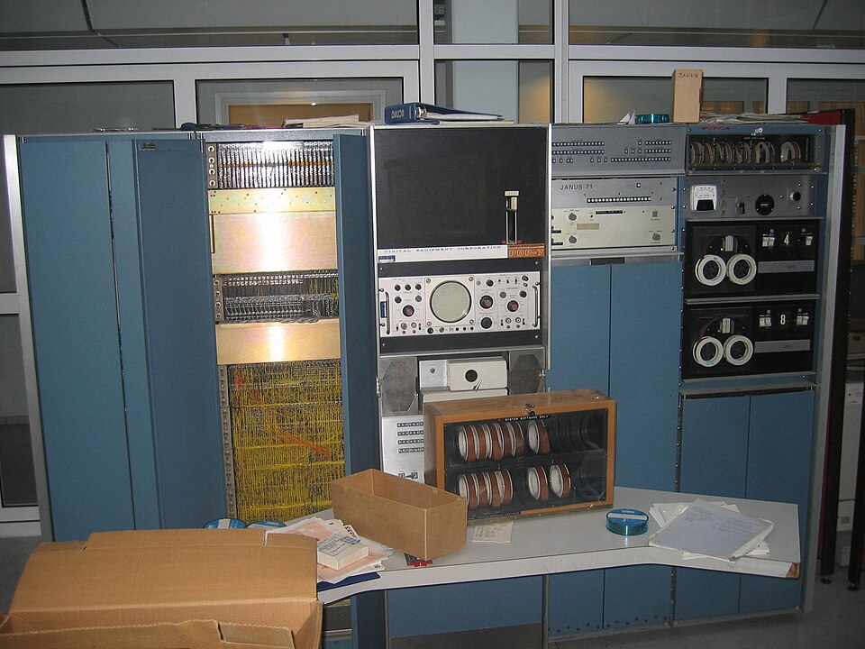
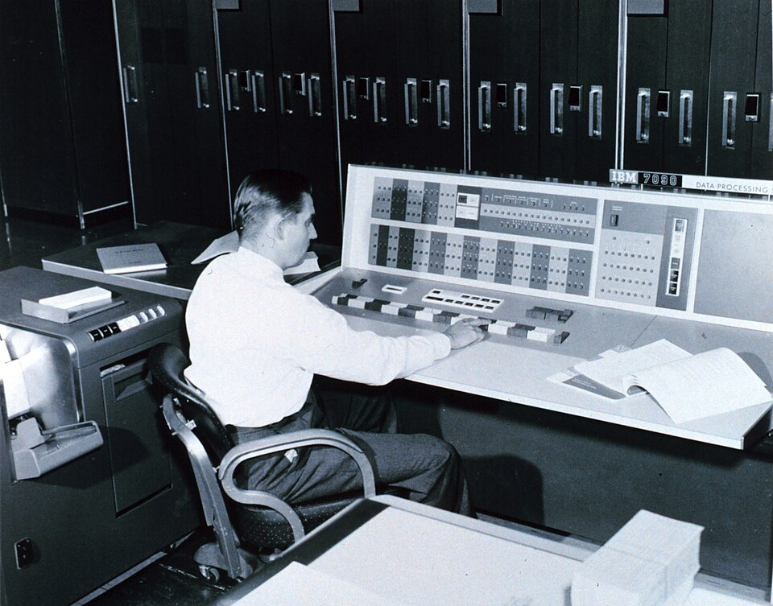
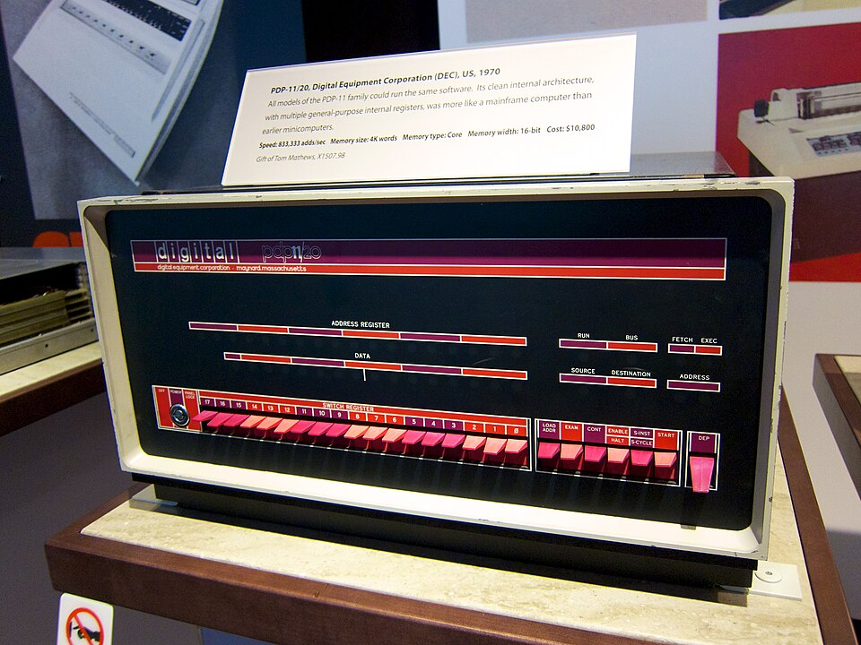
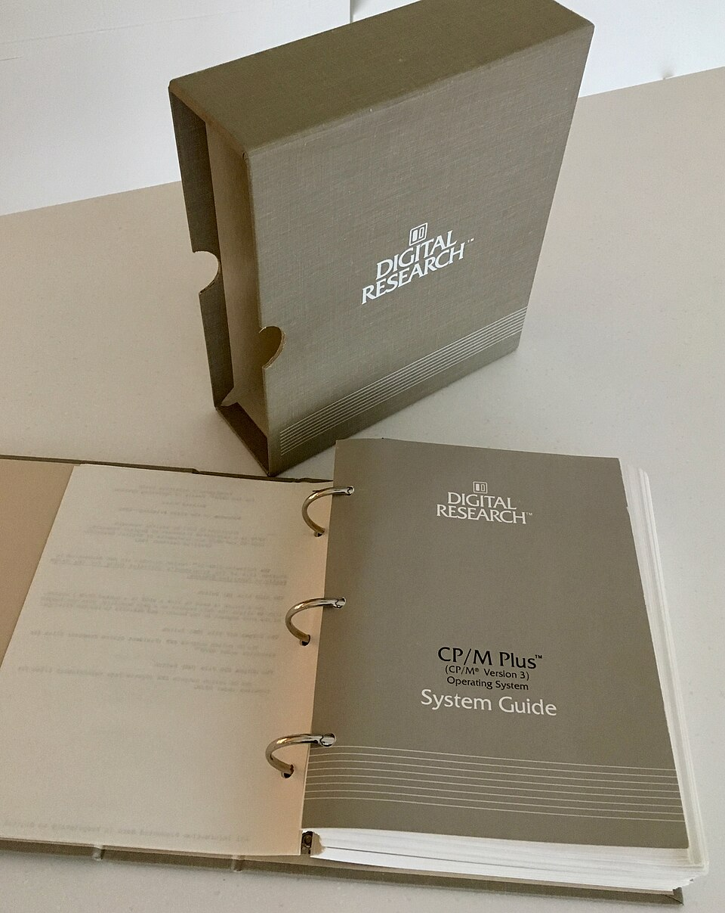
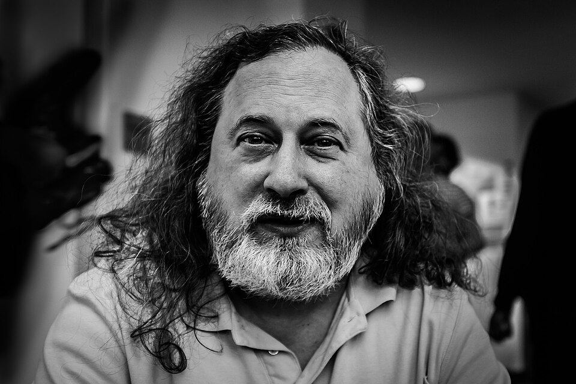
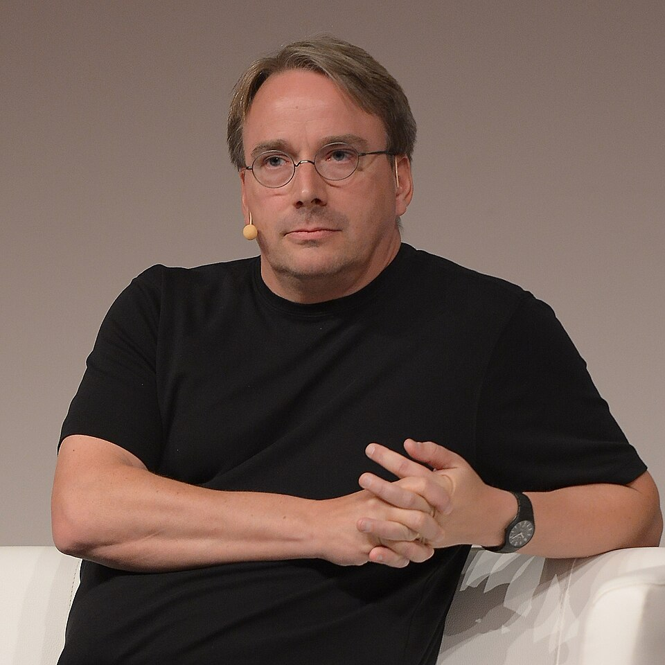
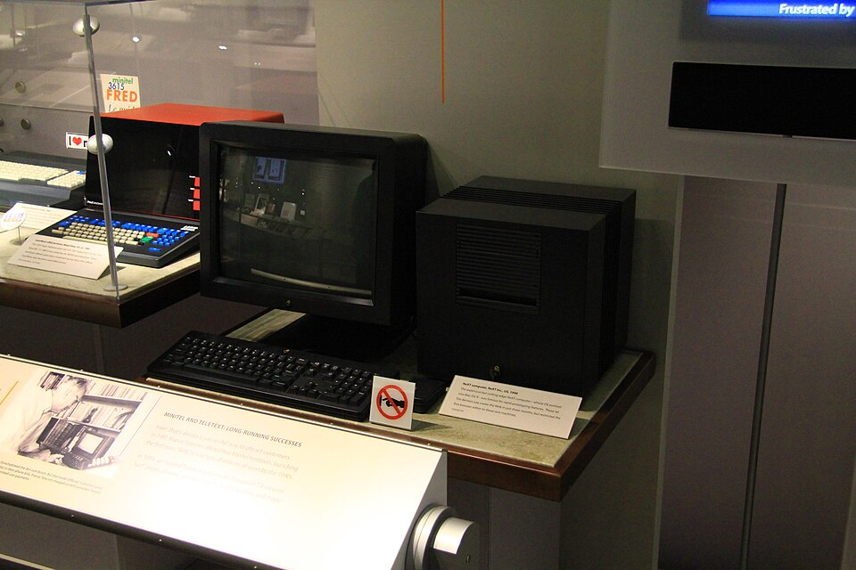

De 1961 a 1997, em ordem e com as pessoas. Os dois episódios anteriores disseram "sistema operacional" sem explicar. É o programa que roda os outros: decide quem usa o processador agora, onde cada um mora na memória, transforma o disco em arquivos e faz teclado e tela virarem peças trocáveis. Quando o áudio pedir, aperte Próximo.
O síndico. Não mora em apartamento nenhum, mas reparte o elevador (o processador), sabe de quem é cada apartamento (a memória), guarda a correspondência com nome (os arquivos) e cuida da portaria que todo mundo usa sem saber como funciona (teclado, tela, impressora).

Um PDP-7 como o que estava abandonado num canto da Bell Labs em 1969 · foto: Matiashf, CC BY-SA 3.0
1961 · Corbató, no MIT
Um programa por vez
imagem real

Um programa por vez · foto: U.S. Weather Bureau, domínio público
Fernando Corbató faz o CTSS: vários terminais na mesma máquina, e o sistema trocando de programa tantas vezes por segundo que cada usuário acha que ela é só dele. Guarda o estado de cada um e impede um de mexer na memória do outro.
em 1964 começa o Multics (MIT, GE e Bell Labs): tudo é arquivo, memória protegida. Ficou grande demais; a Bell Labs saiu em 1969
1969 · Bell Labs
Thompson, Ritchie e o Unix
sem máquina
os dois gostavam da ideia do Multics, não do tamanho. Quando a Bell Labs saiu, ficaram sem computador pra usar
o jogo
Thompson tinha escrito um jogo de viagem espacial e achou um PDP-7 abandonado num canto do laboratório
semanas
em poucas semanas escreveu um sistema pequeno: arquivos, carregar programa, digitar comando. Batizado de Unix: um, em vez de muitos
a filosofia
programas pequenos que fazem uma coisa só, ligados em fila, a saída de um na entrada do outro
Um hardware fraco e descartado obrigou o software a ficar pequeno. O pequeno é que durou.
imagem realThompson e Ritchie · domínio público
1973 · a linguagem C
O sistema solto do hardware
imagem real

Do PDP-7 pro PDP-11 sem reescrever: bastou um compilador de C pra máquina nova · foto: Don DeBold, CC BY 2.0
Todo sistema até ali era escrito na língua da própria máquina: trocou de computador, joga fora. Ritchie cria o C, perto o bastante da máquina pra escrever um sistema e longe o bastante pra não depender de qual. Em 1973 o Unix é reescrito em C e sai de um hardware pra rodar em outro.
DOS, Windows, Mac, Linux e Android são escritos em C ou em filhas do C. O síndico deixou de ser funcionário de um prédio só
1974 a 1981 · Kildall
CP/M, e o DOS que só abria a porta
imagem real

O sistema do 8080: o pedaço que fala com o hardware separado do resto · foto: Hazitt, CC BY-SA 4.0
Kildall escreve o CP/M pro chip do Altair e separa o pedaço que fala com o disco e o teclado de cada marca: pra levar pra outro micro, trocava só ele. O DOS de 1981, que o episódio 01 contou, copia a cara do CP/M.
o que o DOS fazia: guardar arquivos, carregar um programa e entregar a máquina inteira pra ele. Um por vez, sem proteção de memória. Comparado com o Multics, um síndico que só sabia abrir a porta
1984 a 1990
O que o DOS jogou fora
imagem realVárias janelas, vários programas · Panther, domínio público
Várias janelas são vários programas juntos: o sistema precisa, de novo, trocar de programa muitas vezes por segundo e proteger a memória de cada um, como o Multics em 1964. O Mac e o Windows dos anos 80 improvisavam: um travado travava tudo.
a interface gráfica puxa o hardware e puxa o sistema de volta pra onde ele estava vinte anos antes
1988 a 1995
A briga, e o Windows 95
o processo
em 1988 a Apple, já sem Jobs, processa a Microsoft dizendo que o Windows copiou a cara do Mac
a decisão
seis anos depois, em 1994, a Apple perde: janela, ícone e lixeira não são de ninguém
24 de agosto de 1995
o Windows 95, o primeiro que não é um programa por cima do DOS e sim o sistema inteiro. Milhões na primeira semana
o que decidiu
não foi o processo. O PC clone barato com um sistema igual em todos ganhou da máquina fechada. A Apple quase quebra
O Windows 95 pegou porque o PC de 1995 tinha memória pra ele. Exigir menos venceu fazer melhor, de novo.
imagem realO lado que processou e perdeu · Sailko, CC BY 3.0
1983 · Stallman, no MIT
A impressora, o GNU e a licença
imagem real

Pediu o código da impressora e não recebeu · foto: Frank Karlitschek, CC BY-SA 3.0
A impressora nova veio com o programa fechado, e ninguém podia consertar. Em 1983 Stallman anuncia o GNU: um sistema compatível com o Unix que qualquer um pode usar, estudar, copiar e mudar. Em 1989, a GPL: quem recebe a cópia recebe os mesmos direitos.
em 1991 o GNU tinha editor, compilador de C e as ferramentas do Unix, e faltava o núcleo, a parte que reparte o processador e a memória. Portaria, correio e elevador, e nenhum síndico
1987 a 1991 · Tanenbaum e Torvalds
O núcleo veio de um estudante
o livro
Andrew Tanenbaum, em Amsterdã, escreve o Minix, um Unix pequeno pra ensinar, com o código inteiro impresso no livro
o 386
Linus Torvalds, 21 anos, em Helsinque, instala o Minix no PC novo, acha limitado, e escreve um núcleo pra sua máquina com as ferramentas do GNU
agosto de 1991
posta na internet: está fazendo um sistema, só por hobby, "nada grande e profissional como o GNU". E pergunta o que as pessoas querem
o encaixe
o núcleo de Torvalds, o Linux, mais as ferramentas de Stallman: um sistema inteiro, livre, no PC barato
Hardware barato do episódio 01, rede do episódio 02, licença livre: um sistema que ninguém vende.
imagem real

Aos 21 era só um hobby · Krd, CC BY-SA 4.0
1993 a 1997 · Cutler e o NT, Jobs e o NeXT
Os dois lados refazem a base
imagem real

O sistema que voltou com Jobs debaixo do braço · foto: Michael Hicks, CC BY 2.0
A Microsoft contrata Dave Cutler pra escrever um Windows de verdade por dentro: o Windows NT de 1993, base de todo Windows de hoje. A Apple, sem conseguir refazer o seu, compra a NeXT em 1996, traz Jobs de volta, e o Mac vira Unix por baixo.
em 1997 Windows, Mac e Linux têm por dentro as ideias do Multics de 1964. O micro levou trinta anos pra alcançar o mainframe
onde o Linux foi parar
O sistema que ninguém vende
O núcleo de Torvalds no bolso · Google, CC BY 3.0
A rede abriu pro comércio em 1995 e cada servidor precisava de um sistema. O Linux era grátis, rodava no PC barato e qualquer um consertava: em poucos anos, a maior parte da web. Depois o Android, e as máquinas que treinam IA.
pela terceira vez na etapa ganhou quem exigiu menos: padrão aberto, acordo entre redes, licença livre
onde isto para
1997
as pessoas, na ordem
Corbató repartiu o tempo. Thompson e Ritchie fizeram o pequeno e depois soltaram ele do hardware. Kildall separou o pedaço que fala com a máquina. Gates pôs a cara no PC. Stallman escreveu a liberdade numa licença. Tanenbaum ensinou. Torvalds fez o núcleo aos 21 e deu de graça. Cutler refez o Windows por dentro. Jobs voltou com um Unix debaixo do braço
a etapa inteira
a peça pronta e presa na sala da empresa entrou em casa, virou rede e ganhou o síndico que roda os outros programas. Em 1997 a máquina está em toda casa, ligada em toda outra, com um sistema livre por baixo de boa parte delas
o que muda agora
a máquina está pronta e espalhada. Agora as peças vão correr, o processador e uma placa nova feita pra jogo, e o programa vai deixar de ser escrito à mão
Se a máquina já está em toda casa e já fala com todas as outras, o que ainda falta pra ela fazer o que a gente não sabe escrever?